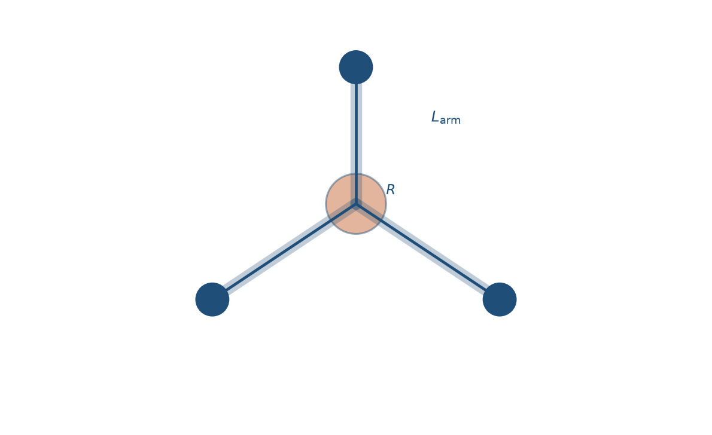
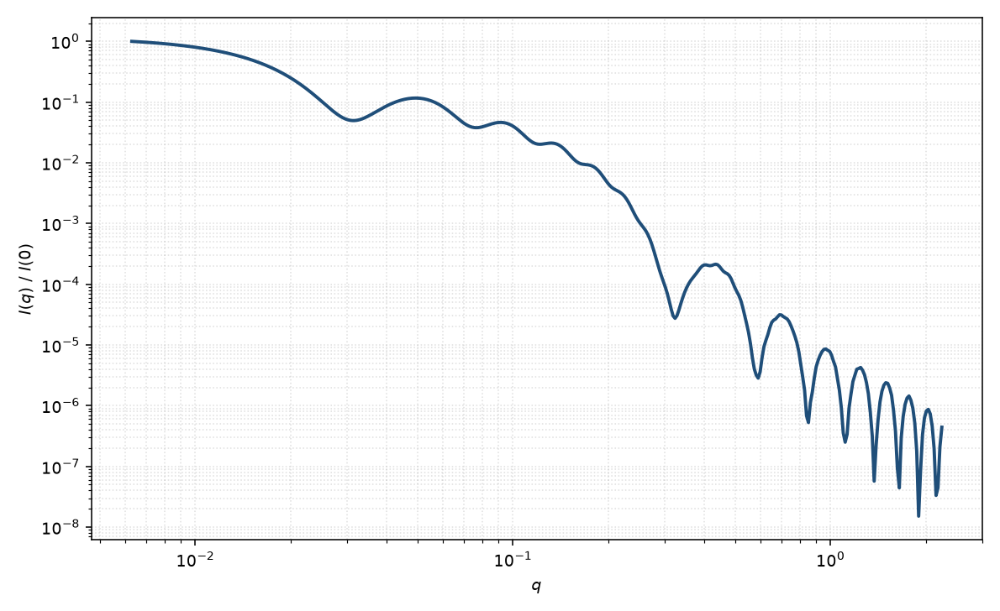

四足体
tetrapod
适用场景
四足体由一个中心核向四面体方向伸出四根圆柱臂。适用于 CdSe/CdTe 等胶体半导体四足纳米晶、四臂星形胶束的粗描述，以及电镜已确认四面体对称的分枝颗粒。
低 $q$ 的 $R_g$ 由臂长 $L_{\mathrm{arm}}$ 主导；中间区混合了棒的 $q^{-1}$ 与臂间干涉；高 $q$ 由臂半径决定。不要用单根圆柱去拟合整条曲线的 Guinier。
物理图像
振幅是四根取向固定（相对粒子）的圆柱振幅之和，再对粒子整体取向粉末平均。臂间夹角为四面体角 $\arccos(-1/3)$。核若体积不可忽略，再加一个中心球或短柱。
Manna 等从合成上确立了这种分枝形貌；散射上它仍是 Fournet 圆柱的相干叠加，而不是新的基本几何。
示意图


核心公式
出发点
稀释、取向无规的分枝颗粒，相干散射振幅是衬度对平面波相位的体积分
$$F(\mathbf{q})=\int_V \Delta\rho(\mathbf{r})\,\mathrm{e}^{i\mathbf{q}\cdot\mathbf{r}}\,\mathrm{d}^3r.$$四足体把体积分成一个中心核与四根圆柱臂。每根臂是均匀圆柱，振幅为轴向 $\mathrm{sinc}$ 乘径向 $2J_1(x)/x$；四根臂的轴相对粒子固定为四面体方向，再对粒子整体取向做粉末平均。
推导
第 $j$ 根臂的轴单位矢量为 $\hat{\mathbf{u}}_j$（四面体角 $\arccos(-1/3)$），该臂与 $\mathbf{q}$ 的夹角满足 $\cos\alpha_j=\hat{\mathbf{q}}\cdot\hat{\mathbf{u}}_j$。单臂
$$F_{\mathrm{cyl}}(q,\alpha_j)=\Delta\rho\,(\pi R^2 L_{\mathrm{arm}})\cdot\frac{2J_1(qR\sin\alpha_j)}{qR\sin\alpha_j}\cdot\frac{\sin(q L_{\mathrm{arm}}\cos\alpha_j/2)}{q L_{\mathrm{arm}}\cos\alpha_j/2}.$$臂从核表面沿 $\hat{\mathbf{u}}_j$ 伸出，还须乘相位 $\mathrm{e}^{i\mathbf{q}\cdot\mathbf{d}_j}$，使四臂相对原点相干。总振幅
$$A(\mathbf{q})=\sum_{j=1}^{4}F_{\mathrm{cyl}}(q,\alpha_j)\,\mathrm{e}^{i\mathbf{q}\cdot\mathbf{d}_j}+F_{\mathrm{core}}(\mathbf{q}).$$核常用均匀球或短柱。粉末平均 $P(q)=\langle|A(\mathbf{q})|^2\rangle_{\hat{\mathbf{q}}}$，等价于对 $\sin\alpha\,\mathrm{d}\alpha$ 与方位角积分。稀释强度 $I(q)=n\langle|A|^2\rangle+B$。默认同等臂长；四根独立 $L$ 通常过度参数化。
低 $q$ 与渐近
低 $q$ 的 $R_g$ 由臂长主导，量级 $R_g^2\sim L_{\mathrm{arm}}^2/5$ 加上臂截面 $R^2/2$ 与核贡献。不要把 Guinier 半径当成单根圆柱的 $L/\sqrt{12}$。指数形式在 $qR_g\lesssim 1$ 可用。
中间区混合棒的 $q^{-1}$ 与臂间干涉调制。高 $q$ 由臂半径决定，第一组截面极小约在 $qR\approx 3.83$。大 $q$ 尖锐界面 $\sim q^{-4}$。
参数表
| 参数 | 符号 | 含义 | 单位 | 典型范围 |
|---|---|---|---|---|
| 臂半径 | $R$ | 圆柱臂截面半径 | Å | 5–80 Å |
| 臂长 | $L_{\mathrm{arm}}$ | 单臂长度 | Å | 50–2000 Å |
| 核半径 | $R_{\mathrm{core}}$ | 中心核（可忽略） | Å | 0–$3R$ |
| 取向角 | $\theta,\phi$ | 整体取向（二维） | 度 | 溶液中通常粉末 |
| 衬度 | $\Delta\rho$ | 相对溶剂 SLD 差 | Å$^{-2}$ | 核/臂可不同 |
拟合注意
臂长多分散强烈改变 $R_g$ 与干涉条纹；臂半径多分散抹平高 $q$。两者正交，应分开报告。不要用等效球半径概括四足体。
取向：溶液四足体几乎各向同性。二维各向异性少见；若样品被拉伸，四面体对称会给出比单轴圆柱更复杂的方位调制。
磁性：磁性四足体的磁矩可沿臂或沿核，磁振幅的相干叠加与核通道几何相同但衬度不同；死层常见于臂表面，磁半径小于核半径。
相近模型
参考文献
- Manna, L.; Milliron, D. J.; Meisel, A.; Scher, E. C.; Alivisatos, A. P. Controlled growth of tetrapod-branched inorganic nanocrystals. Nat. Mater. 2003, 2, 382–385. DOI: 10.1038/nmat902
- Guinier, A.; Fournet, G. Small-Angle Scattering of X-rays. Wiley: New York, 1955.